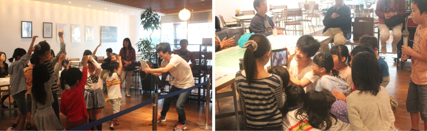

教育プログラム紹介
“モノを大切にする気持ち”や“ICTを使ったコミュニケーション”などを楽しく学べる教育プログラムを提供します。
タブレットをただプレゼントするのではなく、タブレットの使い方やＩＣＴと関わるメリット・デメリット、またタブレットがPCの寄付（リユース）によってこどもたちの前にあることをきちんと伝えてから
下記のような教育プログラムを実践していきます。
環境教育プログラム
タブレットがPCをリユースして届いたものなので、３Ｒ（リデュース・リユース・リサイクル）を学び、モノを大切にしていくことの大切さをワークショップを交えながら考える。また、身の回りの環境や自然を感じながらタブレットで撮影。写真や動画で動植物などの記録をとったり、周りの人に“良さ”を広げる際に使用したりなどプログラムは多彩。
ICT教育プログラム

「動物ものまねクイズ！タブレットでクイズ番組をつくろう！」と題して、人とタブレットのコミュニケーションの違いを学ぶ。また、こどもたちが動画・写真を撮り合い、個々の“良さ”について発見したりなど、“タブレットを通したから分かる”、人とICTのコミュニケーションの取り方を学び、ICTとの良い付き合い方について考える機会をつくる。
講師紹介
- 一般社団法人森の演出家協会代表
- 土屋 一昭（つちや かずあき）氏
東京都青梅市の御岳にある築150年の古民家を拠点に「森の演出家」の第一人者としての事業を開始。
古き良き日本文化と自然体験を行うサービスを提供してきた。
自然と共に生きる彼の姿は話題となり、現在はTVや雑誌などのメディア出演や大使館・自治体・学校現場などからの依頼で全国各地を飛び回っている。
2013年より「森育」「食育」「人育」をテーマにした森の演出家事業の本格的な準備に入り、その動向に各界から注目を集めている。
資格 / 自然観察指導員、森林セラピーソサエティガイド認定、上級救急救命、メディックファーストエイド、調理師免許、火おこしマイスター
www.tokyomoutain.jp
- 俳優・演出家
- 神山一郎（かみやま いちろう）氏
玉川大学文学部芸術学科演劇分野卒業。以降、舞台演出・出演を中心に活動。 俳優のためのワークショップ「演技集団オムニプレゼンス」を8年前より主催。 参加メンバーとともに数々の舞台、映像作品を製作し、それらの演出を手掛ける。 社会福祉士の資格を持ち、障がい者、児童、高齢者向けの演技ワークショップも開催。
artofgroup.wix.com
- 環境教育指導者・情報教育指導者
- 松田 悠（まつだ はるか）氏
３年間、環境教育ＮＰＯで小中学校の環境学習をコーディネートし、企業や専門家と年間１００回以上授業を行う。 その後フリーに。現在は「環境」「教育」「地域活性」をテーマに、企業のＣＳＲの環境学習をコーディネートしたり、環境学習教材の制作にも携わる。
また青梅市と協働で「おうめこどもエコクラブ」を主宰。クラブ会員は約５０名在籍しており、定期的にこどもが身近な自然・エコを学び考える機会をつくっている。
工学部卒業時に情報教育教員免許取得。環境同様に、情報教育の必要性を感じており、学校現場で活躍中。
umekou.net/Ecoclub